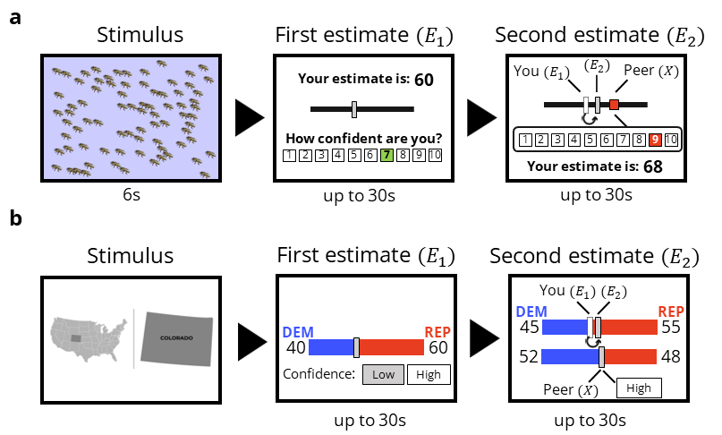
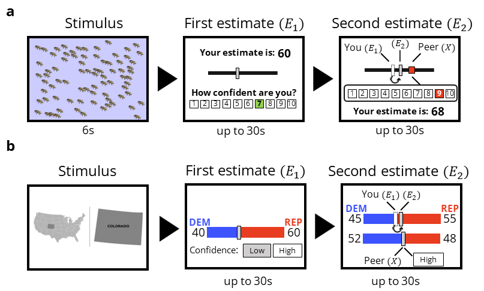

Social information use is impacted more strongly by others’ confidence than by own confidence
Andrea Gradassi, Wouter van den Bos & Lucas Molleman
Abstract
Humans live in a fundamentally social world. The behaviour and judgments from friends, colleagues, television hosts and social media feeds affect what we buy, how we dress, and who we vote for. People tend to be more sensitive to social influence when unsure about their beliefs, and assign more weight to social information when its source is highly confident. However, less is known about the relative impact of the confidence of self and others on social information use, and how they jointly shape social transmission. Here we show with two incentivized decision-making experiments that the confidence of others has a substantially larger impact on social information use than people’s own confidence. In tasks involving perceptual decisions (experiment 1; N=203) and US election predictions (experiment 2; N=213), participants could adjust their initial judgments upon observing judgments of others and were rewarded for accuracy. Adjustments were most sensitive to the confidence of others, particularly when participants’ own confidence was low. Furthermore, confidence also affected adjustment heuristics: confident others prompted participants to compromise more often, rather than to stick with their initial judgments. Our results highlight how sensitivity to others’ confidence may a double-edged sword: it can accelerate learning when confidence predicts accuracy, but it also leaves people vulnerable to confident sources of misinformation.
Demographics
## Sample -----------------------------------------------------------------## Experiment 1 n of unique pptsunique_ppts1 <- data %>% dplyr::filter(experiment =="Experiment 1") %>% dplyr::select(ID) %>%n_distinct()## Experiment 2 n of unique pptsunique_ppts2 <- data %>% dplyr::filter(experiment =="Experiment 2") %>% dplyr::select(ID) %>%n_distinct()## demographicsdemographics <- data %>% dplyr::select(experiment, age, gender, ID) %>%group_by(ID, experiment) %>%distinct() %>%group_by(experiment, gender) %>%summarise(mean_age =mean(age),sd_age =sd(age),n =n()) %>%mutate(perc_gender = n /sum(n))## save as html tableDT::datatable(demographics)
Experiment design

Figure 1 - Experiment Design
Schematic representation of the task screens. a. A round of the estimation task (experiment 1). Participants first observe an image with animals on them for 6 seconds, provide their first estimate of their number (E_1, grey rectangle) and rate their confidence in their estimate on a 1-10 scale. On the next screen, participants observe the estimate of a peer (X, red square), the peer’s confidence (highlighted on the scale), and their own first estimate (E_1, white rectangle). Then they provide a second estimate (E_2, grey rectangle). b. A round of the election prediction task (experiment 2). For a US state, participants predict the proportion of Democratic and Republican votes (out of 100; E_1), and rate their confidence as ‘Low’ or ‘High’. On the next screen, they observe the prediction of a peer (X) and their confidence, and make a second prediction (E_2). In both experiments we measure social information use (s) as the relative adjustment from first to second judgments s=((E_2-E_1))/((X-E_1)). When personal and social information are weighted equally, s=0.5. In addition to measuring adjustments in each round, we considered three heuristics: stay (ignore social information; s= 0), compromise (move towards social information, 0<s<1) and copy (adopt social information, s=1).
Main analysis
Experiment 1
load('model_fits/experiment1/model_interaction_beast.RData')load('model_fits/experiment1/interaction_effect_beast.rda')## To run the model yourself, uncomment the code below. For more details and tests, check the script scripts/analyses/S_by_confidence_regression.R# ## select data# data_beast <- full_dataset %>% # dplyr::filter(experiment == "Experiment 1")# # ## Regression model - experiment 1# model_interaction_beast <-# brms::brm(# s ~ confidence_self * confidence_other + (1 |# ID),# family = gaussian,# data = data_beast,# cores = 3,# chains = 4,# iter = 3000# )## save html table of regression resultstab_model( model_interaction_beast,show.se =TRUE,pred.labels =c("Intercept","Confidence Self (High)","Confidence Other (High)","Interaction" ))
s
Predictors
Estimates
std. Error
CI (95%)
Intercept
0.37
0.02
0.33 – 0.42
Confidence Self (High)
-0.05
0.02
-0.09 – -0.01
Confidence Other (High)
0.12
0.02
0.09 – 0.15
Interaction
-0.07
0.02
-0.11 – -0.04
Random Effects
σ2
0.04
τ00ID
0.06
ICC
0.59
N ID
200
Observations
2199
Marginal R2 / Conditional R2
0.033 / 0.580
Experiment 2
load('model_fits/experiment2/model_interaction_elections.RData')load('model_fits/experiment2/interaction_effect_elections.rda')## To run the model yourself, uncomment the code below. For more details and tests, check the script scripts/analyses/S_by_confidence_regression.R## Regression model - experiment 2# model_interaction_elections <-# brms::brm(# s ~ confidence_self * confidence_other + expertise + favorability_fact + same_majority_fact + population + (1|ID),# family = gaussian,# data = data_elections,# cores = 3,# chains = 4,# iter = 3000# )tab_model( model_interaction_elections,show.se =TRUE,pred.labels =c("Intercept","Confidence Self (High)","Confidence Other (High)","Self-rated expertise","Desirable outcome: yes","Same predicted majority: yes","State population size", "Confidence Self X Confidence Other" ))
Fig. 2. Confidence and social information use. a. Posterior distributions of regression coefficients estimated with a Bayesian Linear Mixed Model with ‘participant’ as random intercept (see Table S2 & S3 for full model specification and robustness checks). Yellow and blue distributions represent the posterior distribution of estimated coefficients for experiment 1 and 2, respectively. The solid dots and error bars underneath indicate the mean of the distribution, 50% and 95% intervals. The highlighted areas under the curves indicate 95% posterior credible intervals. b-c. Mean adjustments (S ̅) by experimental condition for both experiments. Each dot represents the mean value of s for one participant. Y-axis labels indicate the confidence of the participant and the observed peer, respectively. Open triangles indicate the mean of each experimental treatment estimated from the regression conditional effects, bars indicate upper and lower 95% confidence intervals. Black vertical bars in the boxplots show medians, white dots show means. Dashed black vertical lines indicate the point of equal weighting of personal and social information (S ̅=0.5). Values of S ̅ were mostly below 0.5, even in the Low:High condition (purple dots). For further details on adjustments in individual rounds, see Fig. 3.
Fig. 3. Frequencies of heuristic strategies. Bars show the relative frequencies of staying, compromising and copying, broken down by experimental condition. Numbers in white boxes indicate the percentage of cases in each bin. Instances of ‘compromise’ (green bars) are further broken down into cases where participants gave more weight to personal information (s<.5, light green), equal weight to personal and social information (s = .5, intermediate green), or more weight to social information (s >.5; dark green). For an overview of the strategies broken down by participant, see Fig. S1.
Social information use is impacted more strongly by others’ confidence than by own confidence
Andrea Gradassi, Wouter van den Bos & Lucas Molleman
Abstract
Humans live in a fundamentally social world. The behaviour and judgments from friends, colleagues, television hosts and social media feeds affect what we buy, how we dress, and who we vote for. People tend to be more sensitive to social influence when unsure about their beliefs, and assign more weight to social information when its source is highly confident. However, less is known about the relative impact of the confidence of self and others on social information use, and how they jointly shape social transmission. Here we show with two incentivized decision-making experiments that the confidence of others has a substantially larger impact on social information use than people’s own confidence. In tasks involving perceptual decisions (experiment 1; N=203) and US election predictions (experiment 2; N=213), participants could adjust their initial judgments upon observing judgments of others and were rewarded for accuracy. Adjustments were most sensitive to the confidence of others, particularly when participants’ own confidence was low. Furthermore, confidence also affected adjustment heuristics: confident others prompted participants to compromise more often, rather than to stick with their initial judgments. Our results highlight how sensitivity to others’ confidence may a double-edged sword: it can accelerate learning when confidence predicts accuracy, but it also leaves people vulnerable to confident sources of misinformation.
Demographics
Experiment design

Schematic representation of the task screens. a. A round of the estimation task (experiment 1). Participants first observe an image with animals on them for 6 seconds, provide their first estimate of their number (E_1, grey rectangle) and rate their confidence in their estimate on a 1-10 scale. On the next screen, participants observe the estimate of a peer (X, red square), the peer’s confidence (highlighted on the scale), and their own first estimate (E_1, white rectangle). Then they provide a second estimate (E_2, grey rectangle). b. A round of the election prediction task (experiment 2). For a US state, participants predict the proportion of Democratic and Republican votes (out of 100; E_1), and rate their confidence as ‘Low’ or ‘High’. On the next screen, they observe the prediction of a peer (X) and their confidence, and make a second prediction (E_2). In both experiments we measure social information use (s) as the relative adjustment from first to second judgments s=((E_2-E_1))/((X-E_1)). When personal and social information are weighted equally, s=0.5. In addition to measuring adjustments in each round, we considered three heuristics: stay (ignore social information; s= 0), compromise (move towards social information, 0<s<1) and copy (adopt social information, s=1).
Main analysis
Experiment 1
Experiment 2
Plots
Figure 2
Fig. 2. Confidence and social information use. a. Posterior distributions of regression coefficients estimated with a Bayesian Linear Mixed Model with ‘participant’ as random intercept (see Table S2 & S3 for full model specification and robustness checks). Yellow and blue distributions represent the posterior distribution of estimated coefficients for experiment 1 and 2, respectively. The solid dots and error bars underneath indicate the mean of the distribution, 50% and 95% intervals. The highlighted areas under the curves indicate 95% posterior credible intervals. b-c. Mean adjustments (S ̅) by experimental condition for both experiments. Each dot represents the mean value of s for one participant. Y-axis labels indicate the confidence of the participant and the observed peer, respectively. Open triangles indicate the mean of each experimental treatment estimated from the regression conditional effects, bars indicate upper and lower 95% confidence intervals. Black vertical bars in the boxplots show medians, white dots show means. Dashed black vertical lines indicate the point of equal weighting of personal and social information (S ̅=0.5). Values of S ̅ were mostly below 0.5, even in the Low:High condition (purple dots). For further details on adjustments in individual rounds, see Fig. 3.
Fig. 3. Frequencies of heuristic strategies. Bars show the relative frequencies of staying, compromising and copying, broken down by experimental condition. Numbers in white boxes indicate the percentage of cases in each bin. Instances of ‘compromise’ (green bars) are further broken down into cases where participants gave more weight to personal information (s<.5, light green), equal weight to personal and social information (s = .5, intermediate green), or more weight to social information (s >.5; dark green). For an overview of the strategies broken down by participant, see Fig. S1.